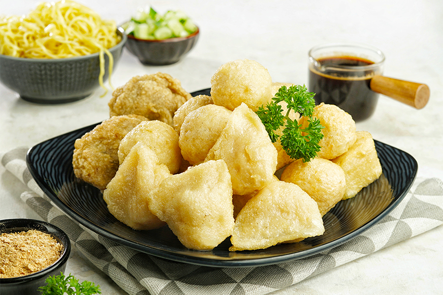
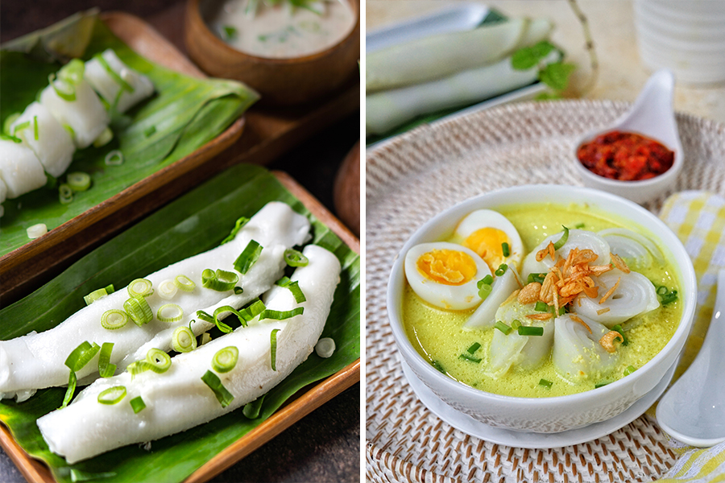

Pempek Candy

Adonan yang terbuat dari ikan segar dengan campuran bumbu bakal digoreng garing khusus buat kamu.
Dalam sepiring pempek, kamu bisa merasakan nikmatnya kuah cuko lengkap dengan tambahan lain seperti
mi kuning, mentimu, hingga bubuk udang rebon!
Burgo

Makanan khas Palembang yang terbuat dari tepung beras ini memiliki kemiripan dengan kwetiau, namun
lebih besar dan berkuah santan pedas.
Teksturnya kenyal, dan makin nikmat dengan campuran potongan telur rebus. Kamu bisa mampir ke Warung
Aba dan menyantapnya selagi hangat.
Celimpungan

Semangkuk bakmi dengan potongan daging dan chasiu bakal bikin lidah dan perutmu berdendang. Pantas
aja sih, tempat ini selalu ramai pengunjung. Oiya, biar makin segar, kamu bisa menambahkan perasan
potongan jeruk kunci juga.